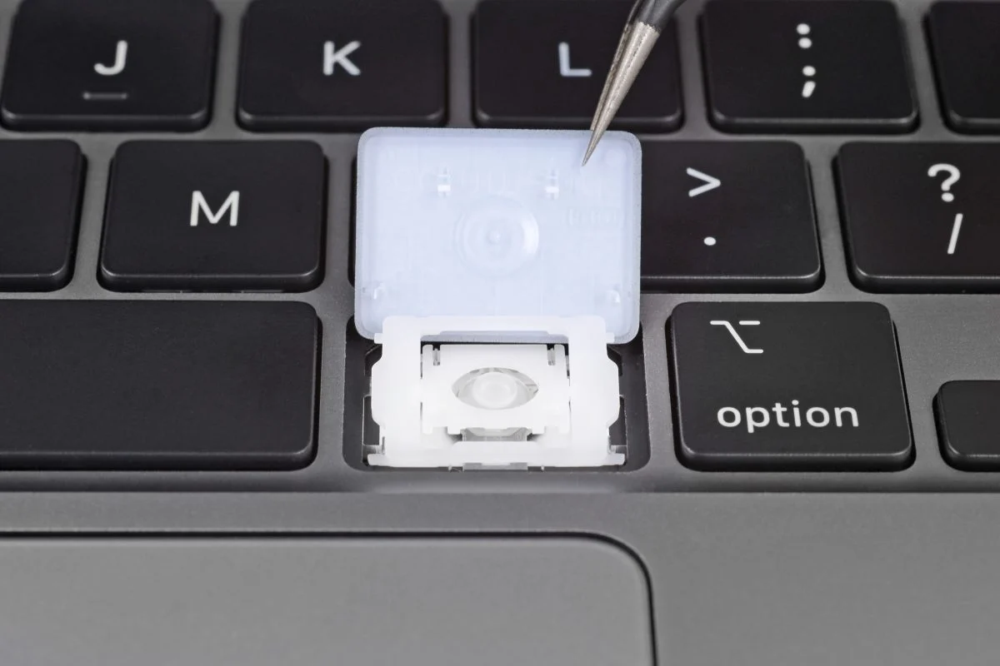

Mechanical Switches
Mechanical switches are known for their tactile feedback and audible click sound. They are popular among gamers and typists who prefer a precise and tactile typing experience. Some people prefer this because when you press them, you can feel a little bump, and they make a satisfying click sound. People who love playing games and those who type a lot really like these switches because they make typing feel precise and enjoyable. So, if you want your typing and gaming to feel extra nice, mechanical switches are the way to go!

Membrane Switches
Membrane switches are a popular choice due to their cost-effectiveness and versatility, finding extensive application in a wide range of keyboards. These switches operate by utilizing rubber domes to detect and record key presses. This design not only makes them affordable but also contributes to a quieter typing experience when compared to the more audible keystrokes produced by mechanical switches. This combination of affordability and quiet performance has made membrane switches a preferred option for many keyboard users.

Scissor Switches
Scissor switches are a type of keyboard mechanism commonly found in slim laptops and sleek low-profile keyboards. They're known for their user-friendly design and are favored in portable devices. These switches are designed to provide a comfortable typing experience while keeping devices thin and compact. When you press a key with a scissor switch, two plastic pieces resembling a pair of scissors come together, creating a smooth keystroke. One of the great things about scissor switches is that they offer a shallow keypress. This means you don't have to press the keys very far, making typing quicker and reducing finger fatigue during long typing sessions. The shallow design also contributes to the slimness of laptops and keyboards. Thanks to their space-saving design, scissor switches play a crucial role in making laptops and keyboards thinner without sacrificing usability. So, the next time you type on a slim laptop or low-profile keyboard, you can appreciate the scissor switches that make it all possible.
